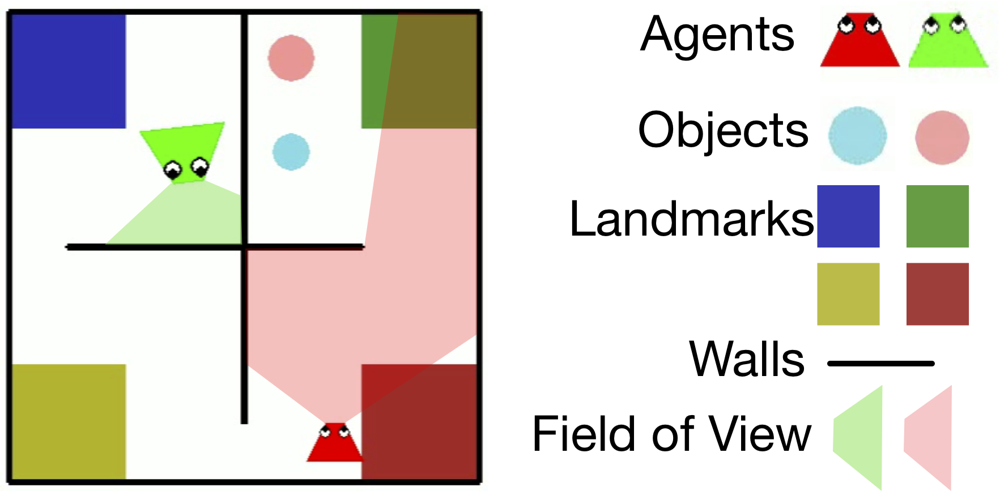
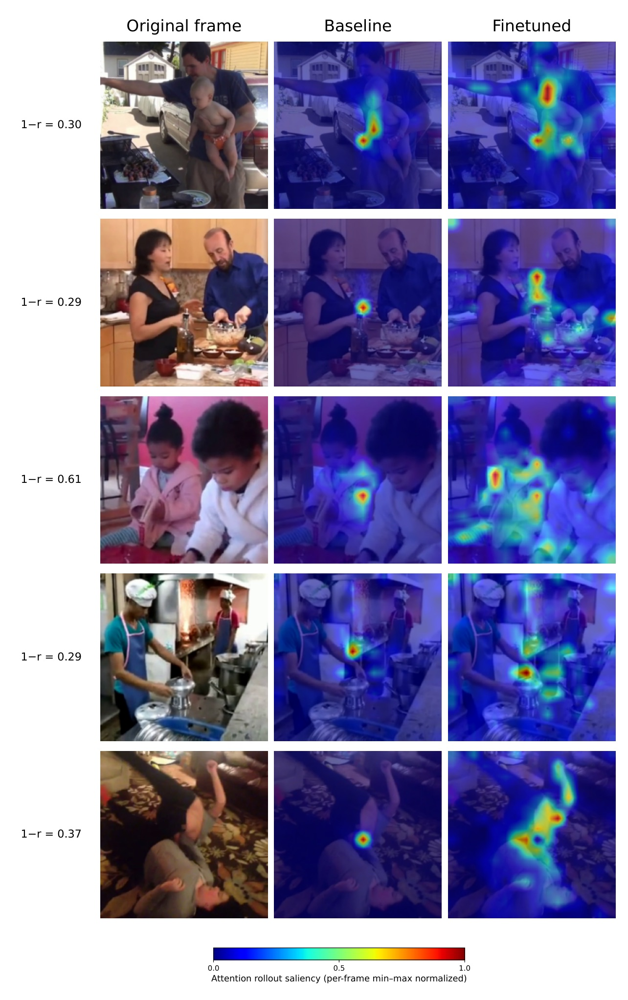
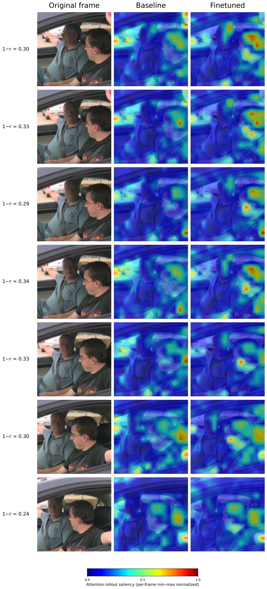
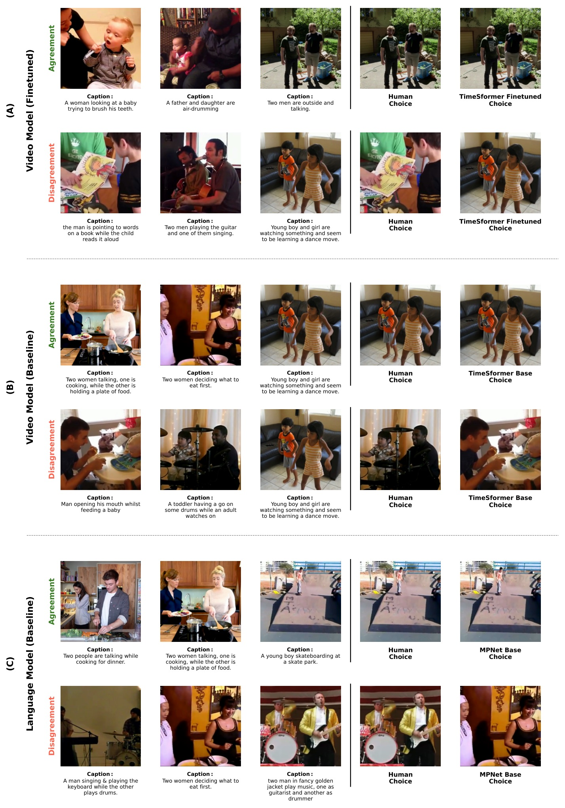

Behavioral Geometric Supervision Aligns Video Foundation Models with Human Social Perception

00Overview
Today's best video models — including V-JEPA 2 — organize social scenes less like humans than a sentence embedding of a caption does. A compact behavioral signal fixes that: fine-tuning on human similarity geometry nearly triples alignment, beats language baselines, and transfers to abstract social interactions.
We collect a new benchmark of human similarity judgments on dynamic social videos and find a representation gap: across 14 pretrained vision encoders, none match human social similarity as well as MPNet embeddings of one-sentence captions — even though participants never saw any text. We introduce behavioral geometric supervision (BGS), a LoRA-based hybrid objective that constrains local (triplet) and global (RSA) embedding geometry to match human relational similarity, and apply it across four ViT backbones: V-JEPA 2/2.1, TimeSformer, VideoMAE, and CLIP.
01Try the task
Every judgment in the dataset came from a trial like this one. Participants were told to “focus on what the people are doing and choose the odd-one-out.” Each click implicitly says the other two clips are more similar, so one trial yields three pairwise constraints.
A greedy set-cover algorithm guarantees every video pair appears in at least one triplet, giving dense coverage of all 1,225 pairs with minimal participant load.
02Pretrained video models miss social structure
We compared layer-wise model similarity matrices with the human similarity matrix using Spearman RSA. Explore the full leaderboard — toggle model families on and off, or switch to odd-one-out accuracy.
The best pretrained video model (X3D-M, R² = 0.124) and the strongest self-supervised backbones (V-JEPA 2 ViT-L, 0.087; V-JEPA 2.1 ViT-B, 0.058) all fall below the best sentence encoder (MPNet, R² = 0.134). Language embeddings approximate human similarity well — but the task was purely visual, exposing a gap in what video pretraining learns.
03Behavioral geometric supervision
BGS updates only low-rank adapters on the video backbone and a small projector. Two complementary losses shape the embedding space:
04BGS closes the gap
After fine-tuning, every backbone improves. V-JEPA 2 ViT-L reaches R² = 0.172 and the distilled V-JEPA 2.1 ViT-B reaches 0.165 — 78% of the split-half noise ceiling (0.213), both above MPNet.
Bootstrap over the 637 observed test pairs: V-JEPA 2.1 ViT-B rises from 0.043 [0.016, 0.080] to 0.160 [0.109, 0.216]; ΔR² = +0.118 [+0.065, +0.173].
Not just caption knowledge
Variance partitioning against MPNet shows two shifts after fine-tuning: structure that only the language model captured collapses into the shared component, and video-unique variance doubles (R² 0.02 → 0.04) — social-visual structure that even an idealized caption embedding cannot reach. A matched language-distillation control (training V-JEPA 2.1 to mimic MPNet) reaches only R² = 0.123, ruling out caption transfer as the mechanism.
05What BGS learns generalizes
We froze the BGS-aligned V-JEPA 2.1 ViT-B encoder and tested it on PHASE: two-agent interactions rendered as moving shapes, with no faces, bodies, or scene context. A linear probe on 400 videos, evaluated on the 100-video generalization set, classifies friendly / neutral / adversarial interactions:

To our knowledge, this is the first demonstration that pixel-level video representations reach prior baselines on this benchmark — matching a hand-designed inverse-planning model and human agreement within sampling error.
Ridge-regression probes on five densely annotated attributes show that BGS makes an interpretable social-affective geometry linearly accessible — although no attribute labels were ever used in training.
Linear probes on UCF101 (split 1, frozen backbones, 3 seeds) show no catastrophic forgetting:
06Attention moves to what matters socially
Attention rollout shows that the pretrained model fixates on a single region — often one agent's torso. After BGS, attention spreads across both agents, faces, gaze, and interacting hands, without any spatial supervision. Across all 250 videos the mean attention divergence is 1 − r̄ = 0.18 ± 0.03: a systematic reweighting, not isolated shifts.



07Takeaways
08Citation
@inproceedings{garcia2026bgs,
title = {Behavioral Geometric Supervision Aligns Video Foundation
Models with Human Social Perception},
author = {Garcia, Kathy and Isik, Leyla},
booktitle = {Advances in Neural Information Processing Systems (NeurIPS)},
year = {2026},
note = {Oral},
url = {https://arxiv.org/abs/2510.01502}
}